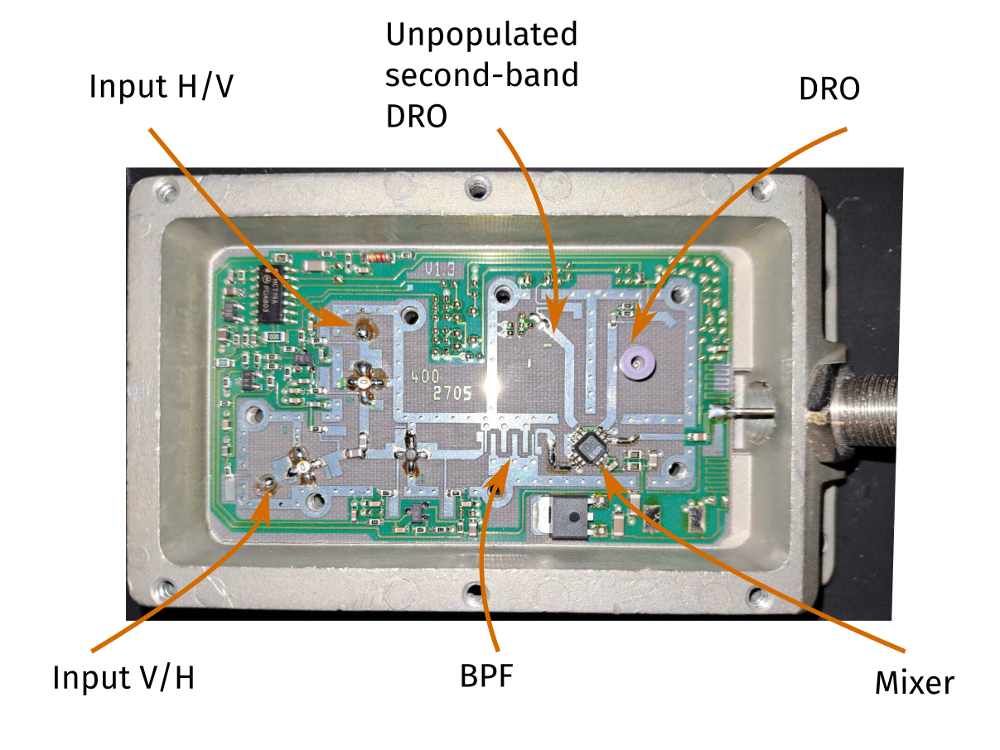

Here is a Low Noise Block downconverter (LNB), a device used in satellite communications to receive signals from satellites. The LNB is connected to a dish antenna and receives the signal reflected by the dish. The device in particular has two high-frequency input (C-band/K-band?), that maybe correspond to the two polarization, that can be switched by cutting the power to the amplifiers. The mixer is kind of exotic, being that the LO is based on microstrip-coupled dielectric resonator, i.e. a Dielectric Resonator Oscillator (DRO). The DRO is believed to be made with ceramic high dielectric constant materials, like Barium Titanate.
